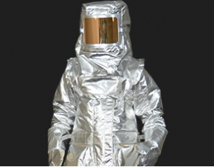

Heading over to Mercury, the heat is just as intense but at least you are still at a good distance away. You look at Mercury and see a bunch of small rocks that seem to glimer. You just want to take a quick look because you never know. Is it worth putting on the suit?
